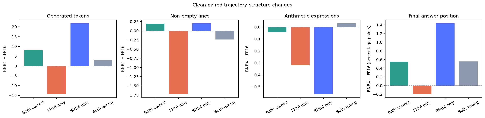
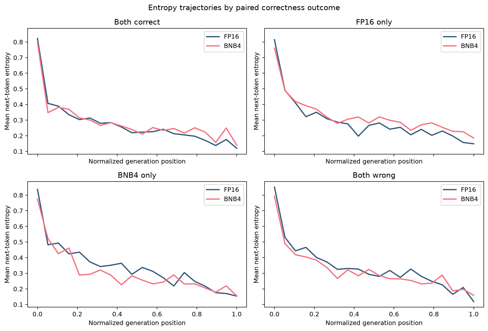
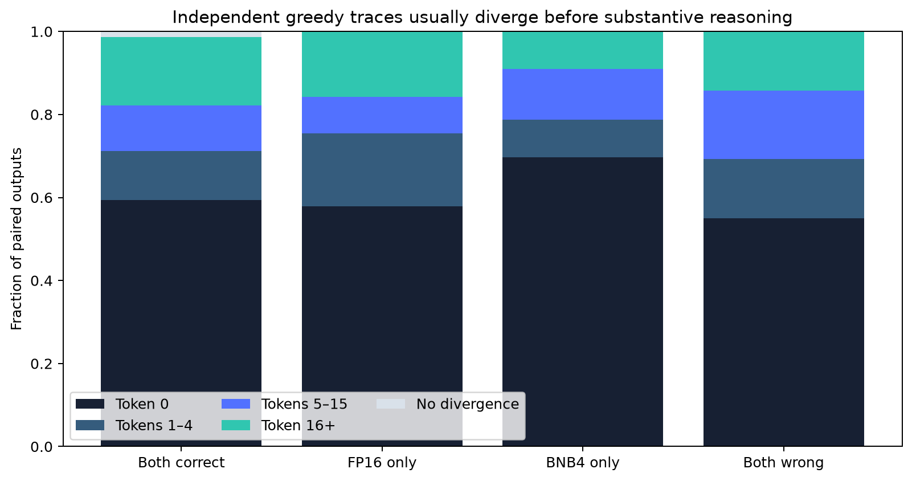
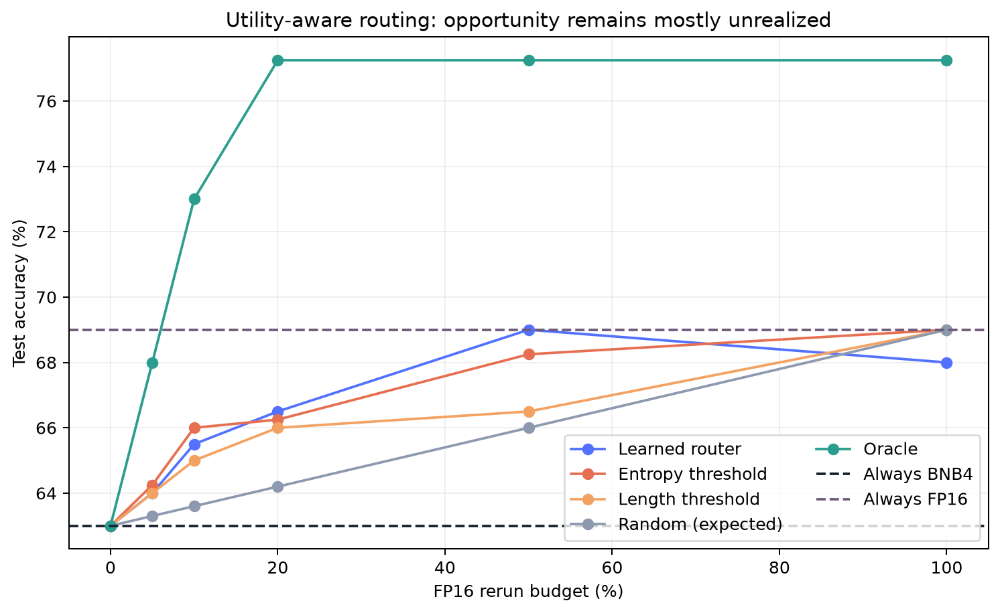
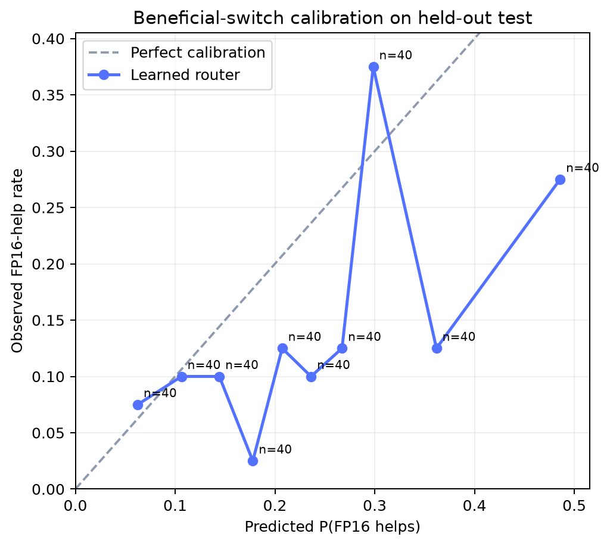
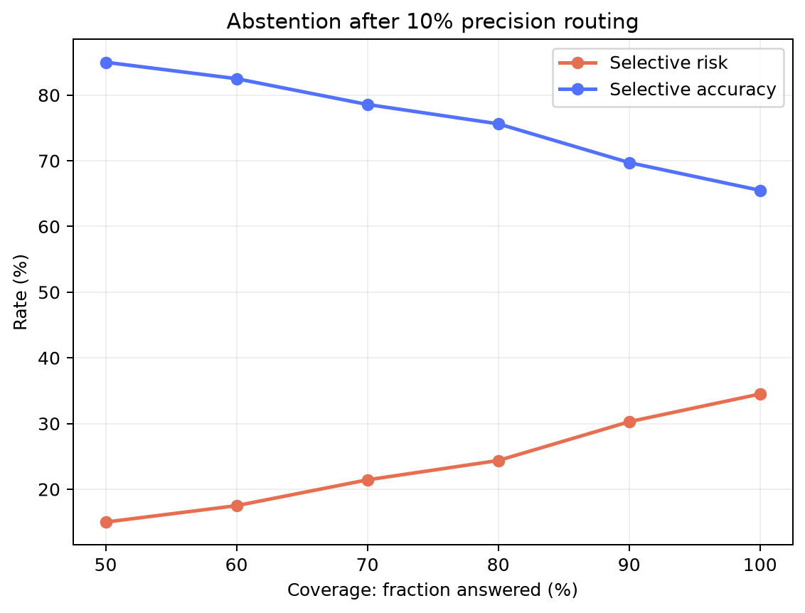
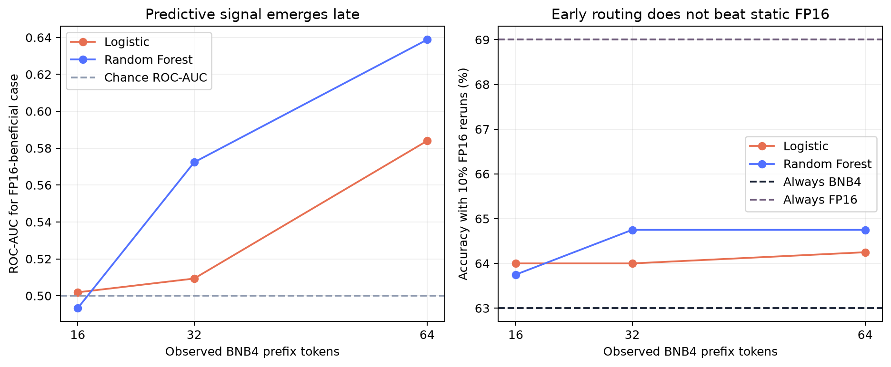

Reproducible evaluation
Deterministic decoding, fixed seeds, matched prompts, checkpoints, progress logs, and JSONL artifacts.
Thesis research MVP · Evidence-gated report
Does numerical precision alter reasoning trajectories in a way that is distinct from ordinary decoding randomness—and can those changes be predicted or exploited?
Current signal
best possible selector accuracy on 400 held-out test examples, versus 63% BNB4 and 69% FP16.
Decision: continue, but narrow scope. The oracle demonstrates opportunity; the learned controller has not captured it.
01 · Research question
FP16 and BNB4 solve overlapping but non-identical subsets. The new question is whether this is a precision-specific trajectory effect or merely another form of decoding noise.
A valid control-variable thesis requires a negative temperature-equivalence result, independent replication, and utility-aware routing that accounts for harmful FP switches.
02 · Implemented system
Deterministic decoding, fixed seeds, matched prompts, checkpoints, progress logs, and JSONL artifacts.
Mac fake-weight quantization for plumbing and CUDA bitsandbytes 4/8-bit execution on the RTX 3090.
Per-token entropy, top-token probability, surprisal, and top-1/top-2 logit margin.
Strict answer parsing, truncation diagnostics, held-out evaluation, harmful-intervention accounting, and bootstrap intervals.
03 · Evidence so far
runs/first/.
Correctness categories
Corrected oracle
The useful oracle saturates after 57 interventions—14.25% of examples.
| Method | ROC-AUC | PR-AUC | Recall @10% | Precision @10% |
|---|---|---|---|---|
| Logistic regression | 0.804 | 0.608 | 0.351 | 0.714 |
| Random forest | 0.762 | 0.519 | 0.298 | 0.607 |
| Entropy threshold | 0.693 | 0.427 | 0.281 | 0.571 |
| Logit-margin threshold | 0.669 | 0.319 | 0.228 | 0.464 |
The eligible held-out evaluation contains 276 FP-correct examples and 57 quantization-induced failures. Logistic ROC-AUC 95% bootstrap CI: 0.730–0.867; PR-AUC CI: 0.486–0.731.
Clean matched subset
325 examplesThe paired gap remains 6.77 points after strict filtering, with McNemar p=0.0128. The quantization effect is therefore not explained by token caps or answer formatting.
| Policy | 5% budget | 10% budget | 20% budget | 50% budget |
|---|---|---|---|---|
| Entropy threshold | 64.25% | 66.00% | 66.25% | 68.25% |
| Best signed-utility model | 64.75% | 65.50% | 66.50% | — |
| Oracle | 68.00% | 73.00% | 77.25% | 77.25% |
| Observed BNB4 prefix | Best beneficial ROC-AUC | 10% routing accuracy | Reading |
|---|---|---|---|
| 16 tokens | 0.502 | 64.0% | Chance-level detection |
| 32 tokens | 0.572 | 64.75% | Weak signal |
| 64 tokens | 0.639 | 64.75% | Moderate ranking, poor utility |
Clean-subset contrast
+36.02 tokensClean BNB4 rescues average +21.72 tokens relative to FP16; clean BNB4 failures average −14.30. Their difference has a bootstrap 95% interval of +2.73 to +67.56. This is an exploratory deliberation-versus-premature-commitment hypothesis, not proof that longer text is better reasoning.
04 · Generated figure gallery
Run python -m scripts.make_figures. Missing figures display a placeholder until the relevant experiment is complete.









05 · What we learned
FP16 and BNB4 can have identical accuracy while succeeding on different examples. Adaptive precision should optimize counterfactual utility, not simply imitate FP.
FP correct/Q wrong cases add accuracy, but FP wrong/Q correct cases remove it. Controller evaluation now counts both.
Token caps and fallback-to-last-number extraction contaminated the first run. The revised prompt, parser, and stop conditions target this directly.
The first predictor had only five positive test failures. Held-out evaluation and bootstrap intervals are now mandatory.
06 · Novelty assessment
As of June 2026, multiple papers already perform dynamic mixed-precision LLM inference or selective high-precision recovery. The thesis must be positioned around correctness-risk and counterfactual intervention utility, not around “dynamic precision” alone.
| Closest work | Overlap | Remaining distinction |
|---|---|---|
| FlexQuant (2025) | Per-token/layer switching using entropy, KL, and top-logit tolerance | Optimizes token fidelity and speed, not paired reasoning correctness utility or harmful fallback |
| DP-LLM (2025) | Runtime layer-wise bit selection from lightweight input-error estimates | Targets precision/latency adaptation rather than calibrated critical-error prediction |
| Quantization Meets Reasoning (2025) | Localizes early reasoning failures and restores local token margins | Uses curated fine-tuning rather than an online intervention/abstention policy |
| Extreme Low-Bit Inference (2026) | Detects generation pathologies and selectively falls back to FP16 | Focuses on 2-bit loops and planning; our proposed target is general correctness risk at modest 4-bit precision |
| ReQAT (2026) | Finds reasoning failures at critical low-entropy symbolic commitments | Training-based W4A4KV4 recovery; our evidence is quant-only risk prediction for W4A16 |
| Quantization Inflates Reasoning (2026) | Shows quantization increases reasoning-token usage and serving cost | Our 1.081× token inflation is a small-model replication, not a novel claim |
This is a scoped literature assessment, not proof of priority. Read the from-scratch project guide and full statistical and novelty audit.